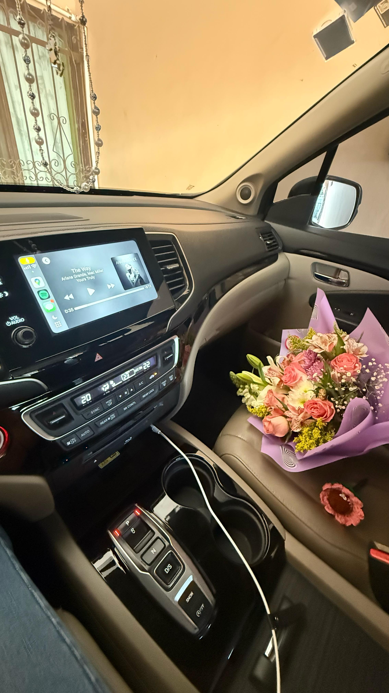
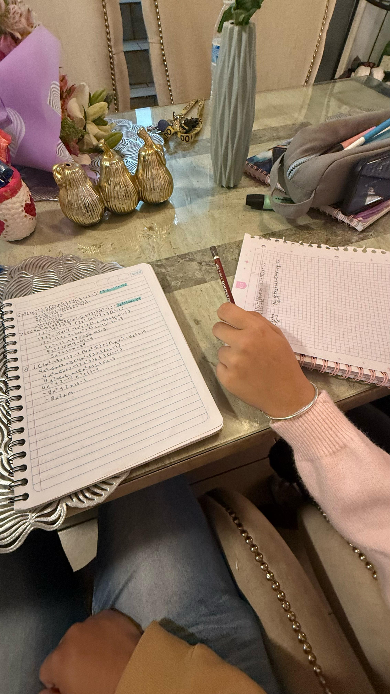
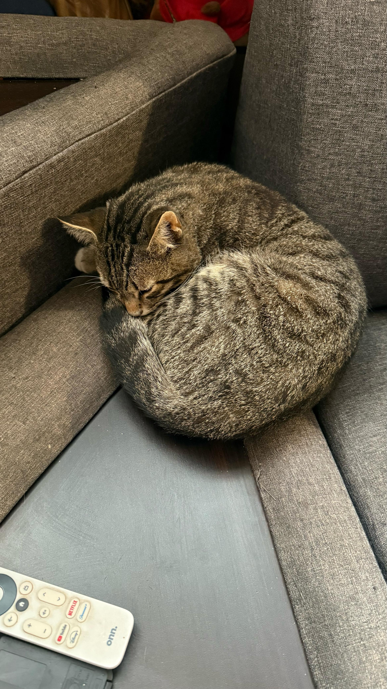

Este día siempre lo recordaré con mucho cariño, no sabes lo que significó para mí y definitivamente
marcó un antes y un después en toda nuestra relación. El plan era muuuy sencillo, iba a tu casa, te
enseñaba suma y resta de polinomios y ya, lo que suena raro viniendo de mí porque no soy bueno en
matemáticas, pero por ti, por ti estudié toda la noche y aunque era un tema que dominaba un poco, me
ponías muy nervioso.
También era la primera vez que conocía a tu mamá y qué graciosa primera vez, cuando me preguntó "¿Y
ustedes son novios?" y no supe qué decir JAJAJAJA
No tienes idea de la tranquilidad que sentí las veces en las que sentía tu presencia al lado de mí, los
dos sentados, agarrándonos las manos y yo acariciando tu cabeza, es algo que definitivamente no tiene
precio.
Aprecio muchísimo la confianza y la oportunidad que me diste, te amo demasiado y mil gracias por dejarme
amarte, prometo no decepcionarte nunca.
|  |  |  |